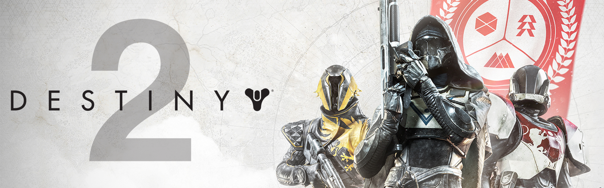
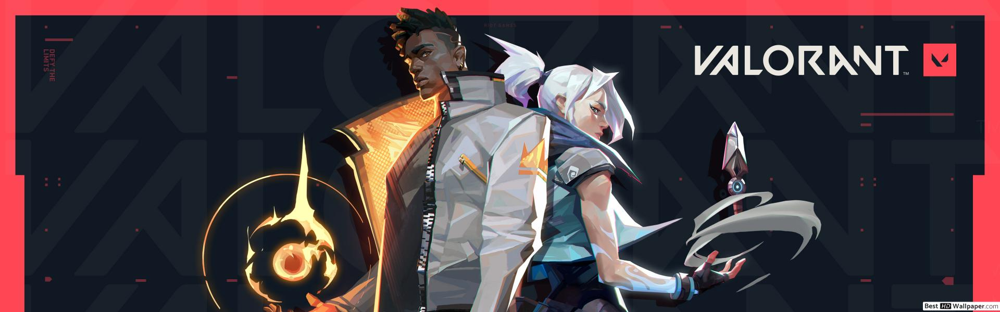
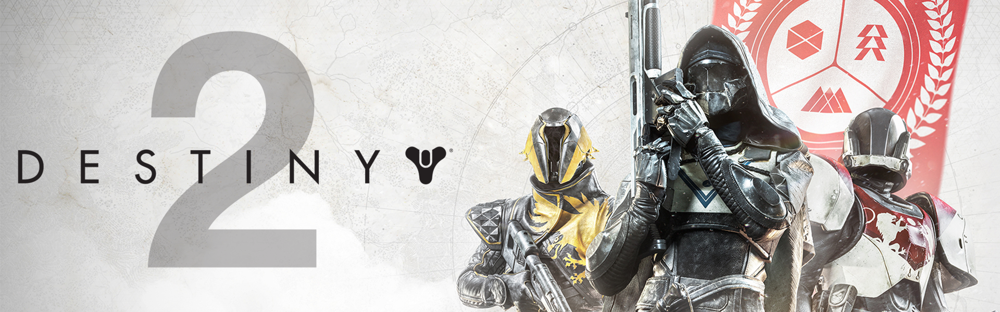
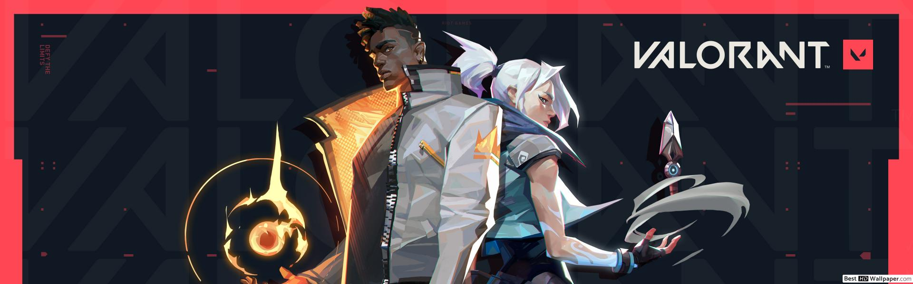

Uncharted 4: A Thief's End
The story follows Nathan Drake, a now retired treasure hunter, now reunited with his long lost brother Samuel. He must save his brother from a tyrant by seeking Captain Henry Avery's legendary fabled pirate treasure.
Genre: Action-adventure, third-person shooter
Developer: Naughty Dog
Publisher: Sony Interactive Entertainment
ESRB Rating: T for Teen for violence, blood, language, suggestive themes, and tobacco Use.
For more information, see ESRB Ratings.